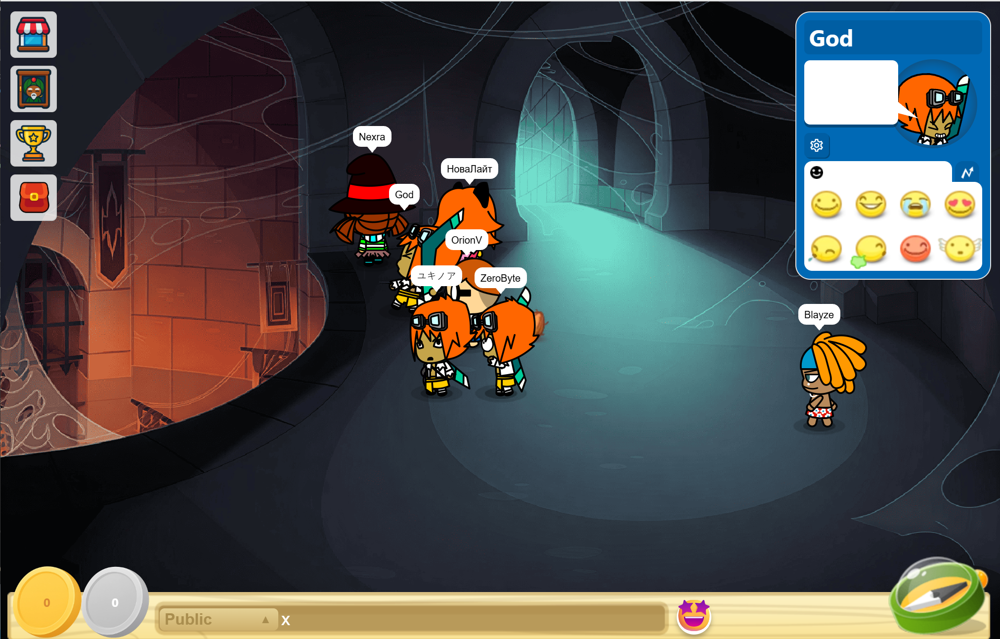
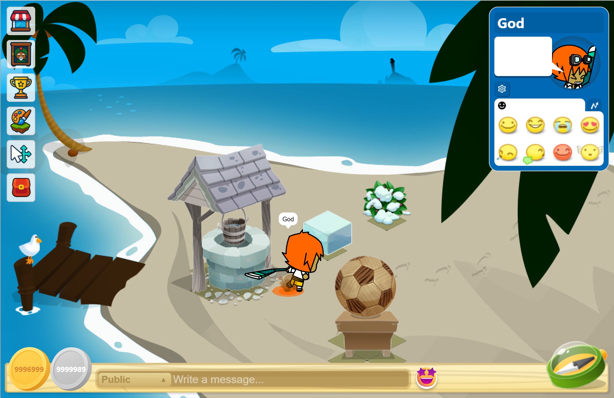
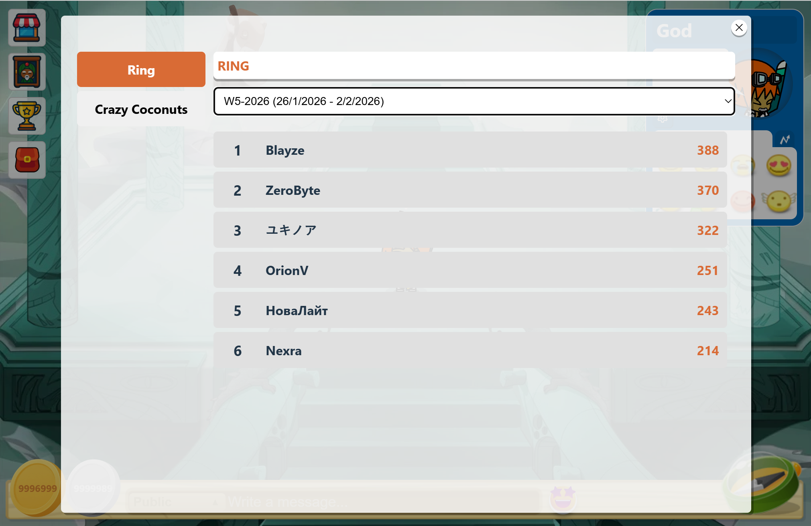

Imágenes de referencia, no del servidor en vivo. Estas capturas son parte del código base y no demuestran que las salas, jugadores, compras o minijuegos estén disponibles en esta web pública.
CAPTURAS DEL REPOSITORIO
Ver el estado real del desarrollo →Conoce el mundo.
Selecciona una categoría y abre la captura original para verla más grande.
9 capturas
 Ver captura completa ↗
Ver captura completa ↗Portada del juego
Imagen de presentación del cliente BoomBang HTML5.
 Ver captura completa ↗
Ver captura completa ↗Lobby
Vista del vestíbulo del proyecto original.

Ver captura completa ↗Sala pública
Escenario de una sala pública del cliente.

Ver captura completa ↗Sala privada
Ejemplo de una sala privada del cliente.
 Ver captura completa ↗
Ver captura completa ↗Islas y construcción
Diseño de islas incluido en el código base.
 Ver captura completa ↗
Ver captura completa ↗Personalización de personajes
Ejemplo del aspecto de los avatares del proyecto.
 Ver captura completa ↗
Ver captura completa ↗Golden Ring
Captura del minijuego Golden Ring del código original.

Ver captura completa ↗Clasificaciones
Ejemplo visual de clasificaciones; no contiene resultados en vivo.
 Ver captura completa ↗
Ver captura completa ↗Catálogo de objetos
Vista ilustrativa de objetos del proyecto. No es una tienda activa.
BoomBang CL es un proyecto independiente sin afiliación oficial. La publicación de estas imágenes no implica que el juego esté desplegado ni disponible para jugar.